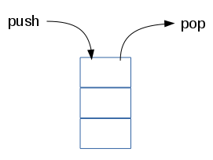

JavaScript
Les Tableaux
Remi Forax
Array ?
“In computer science, an array data structure, or simply an array, is a data structure consisting of a collection of elements (values or variables), each identified by at least one array index or key.”
source: Wikipedia.org - Array
Tableau ?
“En informatique, la structure de données tableau, ou simplement tableau, est une structure de données consistant en une collection d'éléments (valeurs ou variables), chacun identifié par au moins un index de tableau ou clé.”
source : Wikipedia.org - Tableau
Tableau
Un tableau en Javascript se déclare entre [ et ].
Les éléments sont séparés par des virgules.
Les tableaux sont hétérogènes, ils peuvent contenir des valeurs de types différents.
Index de tableau
Les cases d'un tableau sont accessible par un index
Un accès hors des bornes (0, length -1) du tableau
renvoie undefined
La première case d'un tableau est à l'index 0
Modfier un élément d'un tableau
Les cases d'un tableau sont accessibles en lecture et écriture
Boucle sur un tableau
Une boucle for de 0 à length - 1 permet de
parcourir tous les éléments
Boucle sur un tableau (2)
Si on trouve le résultat, on peut arrêter la boucle
Boucle sur un tableau (3)
Ne jamais sortir d'une boucle en changeant un drapeau
indexOf/lastIndexOf
indexOf() utilise == pour trouver la première occurence d'un élément et renvoie son index (ou -1)
lastIndexOf(), même chose mais pour la dernière occurrence
join()
join(delimiteur) permet de créer une chaine de caractères avec tous les éléments séparés par un délimiteur
texte.split()
texte.split(delimiteur) permet de créer un tableau
à partir d'une chaîne de caratères en découpant
suivant le délimiteur
text.split() est le dual de array.join()
Tableaux dynamiques
push() permet d'ajouter un élément à la fin d'un tableau
Pile
Il existe aussi une méthode pop qui retire le dernier élément permettant d'utiliser un tableau comme une pile

Élément en tête
shift() décale les éléments vers la gauche
(supprime le premier élément)
unshift décale les éléments sur la droite
(insère le premier élément)

ces deux méthodes ont un temps d'exécution qui dépend du nombre d'éléments
Sous-partie d'un tableau
slice(start, end) permet d'extraire la sous partie [start, end[ d'un tableau sous forme d'un nouveau tableau
contrairement aux méthodes précédentes, slice ne modifie pas le tableau sur lequel on appelle la méthode mais renvoie un nouveau tableau
Suppression/Insertion au milieu
splice(start, deleteCount, elements) supprime deleteCount éléments à l'index start et de les remplace par des elements
Attention à ne pas confondre slice et splice !
Trier un tableau
La fonction sort() permet de trier un tableau sur place
Trier un tableau (2)
Par défaut, les comparaisons se font
sur les chaines de caractères.
ce qui n'est pas forcément ce que l'on veut !
Trier avec une fonction de comparaison
On utilise une fonction de comparaison pour paramétrer sort(fun) !
Fonction de comparaison
doit renvoyer une valeur négative si la première valeur est plus petite, 0 si les deux valeurs sont égales et une valeur positive sinon
Rappel: Fonction anonyme
JavaScript possède la notation '=>'
pour déclarer des fonctions anonymes